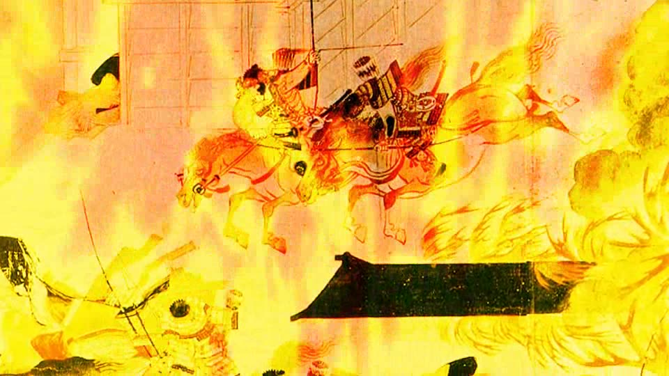
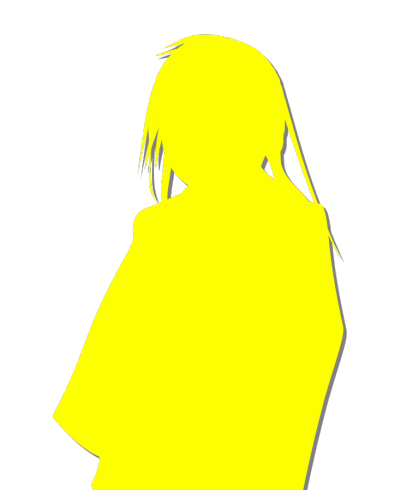
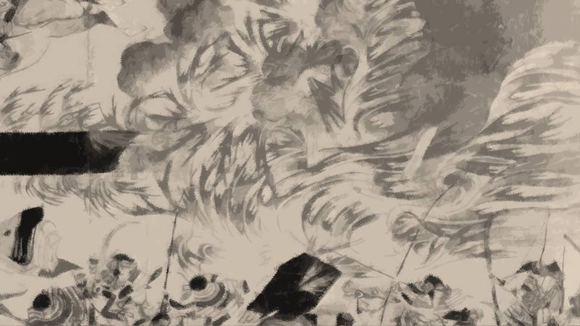
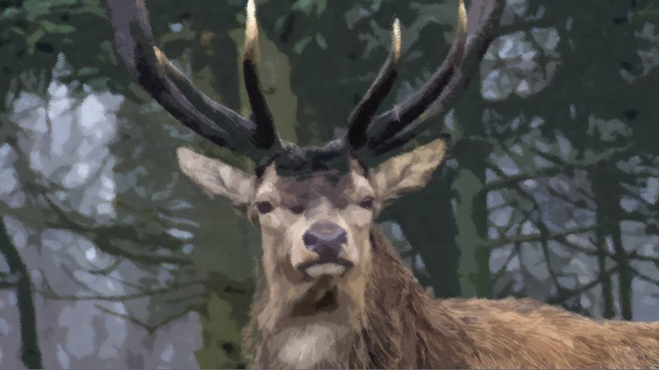
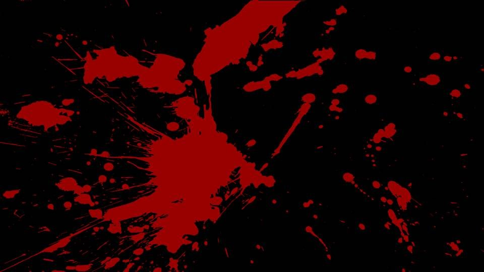
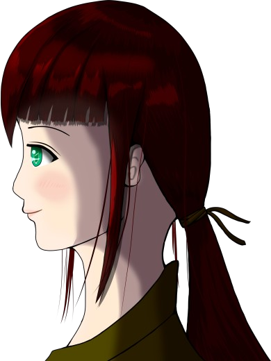
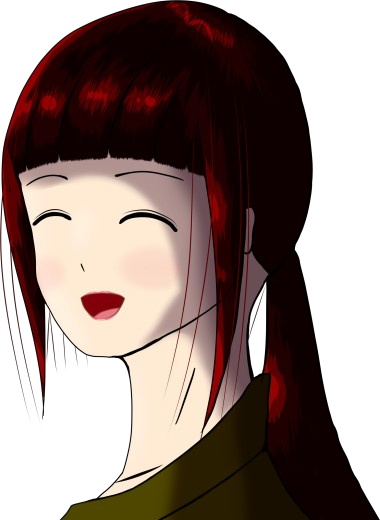
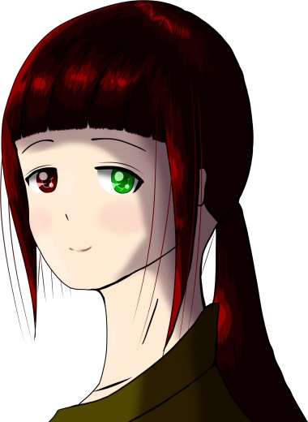
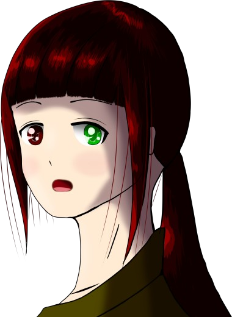
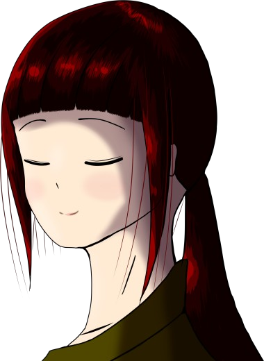

あらたな村
概要

video: 平治の乱.wmv祀耀の元号が始まる1年前の五月二六日――。
太良聖守が政権を掌握する時代。
栄華を極めたその太良氏も、盛者必衰の 理 から逃れることは叶わず、没落する運命にあった。
太良聖守が政権を掌握する時代。
栄華を極めたその太良氏も、盛者必衰の 理 から逃れることは叶わず、没落する運命にあった。
video: 平治の乱.wmv
当時の帝の三男――帝の皇子こそが、太良氏を滅ぼし新たな時代の幕開けのきっかけとなった人物である。
video: 平治の乱.wmv
皇子の令旨――
それは太良聖守らが、皇子の実父である帝を幽閉するなどの暴挙を理由に、
太良氏一族を追討するため、湊氏並びに軍兵に対して下された命令だった。
皇子は諸国の湊氏に打倒太良氏を呼びかけクーデターを起こしたのだが……。
皇子は諸国の湊氏に打倒太良氏を呼びかけクーデターを起こしたのだが……。
皇子――御年29歳。
湊 綱 宗――御年28歳。
綱宗の祖父は皇子同様、聖守政権に不満を持つ人物であり、皇子と結託して打倒太良氏を掲げた。
湊 綱 宗――御年28歳。
綱宗の祖父は皇子同様、聖守政権に不満を持つ人物であり、皇子と結託して打倒太良氏を掲げた。
しかし、その皇子と湊氏のクーデターも、聖守の前に屈することとなってしまった。
祀耀の年号が始まる前年の五月二六日に皇子を始め、反太良氏勢力は処刑、または討伐されたはずだったのだが――。
祀耀の年号が始まる前年の五月二六日に皇子を始め、反太良氏勢力は処刑、または討伐されたはずだったのだが――。
「はあ！ はあ！」
「く……！」
甲冑など今となっては何の役にも立たない。
ただ暑く、重いだけ。
「く……！」
甲冑など今となっては何の役にも立たない。
ただ暑く、重いだけ。
私と綱宗は西の都から逃れ、東の都へと歩みを進めていた。
もう何か月になるのだろうか。
ここにいるのは、この私と、共に戦った綱宗と数人の従者のみ。
もう何か月になるのだろうか。
ここにいるのは、この私と、共に戦った綱宗と数人の従者のみ。
従者の中にはまだ幼い女子も混じっている。
心ある従者に恵まれたことは大変喜ばしいことである。
しかし反面、それで失われる命があった。
この逃避行で何人が力尽きたことか。
心ある従者に恵まれたことは大変喜ばしいことである。
しかし反面、それで失われる命があった。
この逃避行で何人が力尽きたことか。
私が令旨を出したのは間違いだったのだろうか。
聖守の暴政に我慢ならぬ者たちのために、一念発起したのだが――。
帝の息子とあろう者がこんな見苦しい姿をさらしてはいるが、それでも生き残らねばならない。
聖守の暴政に我慢ならぬ者たちのために、一念発起したのだが――。
帝の息子とあろう者がこんな見苦しい姿をさらしてはいるが、それでも生き残らねばならない。
「よし、今日はここまでにしよう」
私がそう掛け声をかけると、者どもは皆、その場にため息をつきながら腰を下ろす。
もはや身分がどうこうと言っている次元ではない。
私が帝の息子だろうが、従者が賤しい身分の出身だろうが、これ以上は誰1人が欠けても生き延びることはできない。
私がそう掛け声をかけると、者どもは皆、その場にため息をつきながら腰を下ろす。
もはや身分がどうこうと言っている次元ではない。
私が帝の息子だろうが、従者が賤しい身分の出身だろうが、これ以上は誰1人が欠けても生き延びることはできない。
初めのうちは自分が生き残り、父を幽閉した聖守に一泡吹かせることを目的に生き延びようとした。
しかし夏を越え、秋を迎え、冬を耐え抜くと、もう聖守をどうしようという意識はなくなった。
ここまで文句ひとつ言わずについてきてくれた綱宗、そして従者たちのために私が生きる。
私がここで生きることを投げ出してしまっては、彼らは何のためにここまで来たのか。
しかし夏を越え、秋を迎え、冬を耐え抜くと、もう聖守をどうしようという意識はなくなった。
ここまで文句ひとつ言わずについてきてくれた綱宗、そして従者たちのために私が生きる。
私がここで生きることを投げ出してしまっては、彼らは何のためにここまで来たのか。
「綱宗、今はどこまで来ただろうか」
「東の都よりもだいぶ北の方へ逸れてしまったようだ」
ずいぶんと山深いところまで来てしまった。
しかしそうでないと追っ手をまけないばかりか、山賊に襲われる可能性だってある。
この獣道すらありがたい山々を歩くことだけが、私たちの生きる道なのだ。
ずいぶんと山深いところまで来てしまった。
しかしそうでないと追っ手をまけないばかりか、山賊に襲われる可能性だってある。
この獣道すらありがたい山々を歩くことだけが、私たちの生きる道なのだ。
特に晩秋から冬は山の中では身動きが取れず、運よく見つけた洞穴に身を潜め、ただただ春の訪れを待っていた。
時折、鹿や冬眠から起きた熊を見つけ、すぐさま総員で狩ったのだ。
恐ろしい熊ですら、飢えた私たちの前では肉詰めの皮袋に過ぎない。
時折、鹿や冬眠から起きた熊を見つけ、すぐさま総員で狩ったのだ。
恐ろしい熊ですら、飢えた私たちの前では肉詰めの皮袋に過ぎない。
陽が長くなる時期を見計らい、私たちは再び東の都へ足を進めた。
周囲にはまだ雪が残っている。
もう春の陽気が垣間見える時期ではあるが、この山深い地域では雪が残り、そして夜は水面に鏡のような氷が張る。
周囲にはまだ雪が残っている。
もう春の陽気が垣間見える時期ではあるが、この山深い地域では雪が残り、そして夜は水面に鏡のような氷が張る。
みんな、もう少しだ。
もう少し東へ向かい、そのまま南へ下れば東の都に着く。
そうすれば、東の都の長である湊 朝 寄がきっと保護してくれる。
もう少し東へ向かい、そのまま南へ下れば東の都に着く。
そうすれば、東の都の長である湊 朝 寄がきっと保護してくれる。
「皇子！ 大変でございます！
糸姫が……！」
従者の1人が私を呼びつける。
「どうした、糸姫がどうした！？」
さっきまで大きな荷物を背負い山道を黙々と歩いていた糸姫。
まだ齢10ほどの幼い従者だ。
従者の1人が私を呼びつける。
「どうした、糸姫がどうした！？」
さっきまで大きな荷物を背負い山道を黙々と歩いていた糸姫。
まだ齢10ほどの幼い従者だ。

「うう……ううう……」
「額を出してみろ。 …………熱か……。 誰か、雪を集めてくれ！ 糸姫、大丈夫だからな。今日はもう歩かないから、ゆっくり休むんだ」
「皇子様……申し訳ありません……」
糸姫は赤い顔で、荒い呼吸の隙間を縫って私に詫びる。
「額を出してみろ。 …………熱か……。 誰か、雪を集めてくれ！ 糸姫、大丈夫だからな。今日はもう歩かないから、ゆっくり休むんだ」
「皇子様……申し訳ありません……」
糸姫は赤い顔で、荒い呼吸の隙間を縫って私に詫びる。

糸姫は、従者の中でも特に賤しい身分の女子だ。
この女子は帝の家に仕える身でありながら、特に身分が低い家系だった。
本来は私と顔を合わせることすらない身分の低い女子。
この女子は帝の家に仕える身でありながら、特に身分が低い家系だった。
本来は私と顔を合わせることすらない身分の低い女子。
しかし、かの戦で西の都から逃れる際、私が短刀を落とし、たまたま近くにいた糸姫が拾ってくれた。
短刀を拾ったからという理由でそのまま連れてきた。
なぜなら、糸姫の両親はすぐそばで死んでいたからだ。
天涯孤独の身となってしまった糸の居場所は、もう存在しない。
そもそも私の勅旨で両親が死んだなら、私にはその責任の一端がある。
短刀を拾ったからという理由でそのまま連れてきた。
なぜなら、糸姫の両親はすぐそばで死んでいたからだ。
天涯孤独の身となってしまった糸の居場所は、もう存在しない。
そもそも私の勅旨で両親が死んだなら、私にはその責任の一端がある。
本当なら大人に甘えたい年頃だろう。
甘い砂糖を舐めて喜ぶ年頃だろう。
きれいな着物に憧れるだろう。
そんな糸に、綱宗の提案で『姫』をつけて呼ぶことにした。
せめて少しでも、糸の心が前向きになるように。
糸もたいそう気に入ってくれているようだ。
甘い砂糖を舐めて喜ぶ年頃だろう。
きれいな着物に憧れるだろう。
そんな糸に、綱宗の提案で『姫』をつけて呼ぶことにした。
せめて少しでも、糸の心が前向きになるように。
糸もたいそう気に入ってくれているようだ。
「皇子、お持ちしました！」
従者の1人が両手いっぱいの雪を持ってきた。
従者の1人が両手いっぱいの雪を持ってきた。
「ご苦労。糸姫、暑いか？ 寒いか？」
「あ……暑い……」
その返事を聞き、糸姫の額に雪を当てる。
すると糸姫のこわばった顔が少しだけ緩む。
「あ……暑い……」
その返事を聞き、糸姫の額に雪を当てる。
すると糸姫のこわばった顔が少しだけ緩む。
従者たちが、私と糸姫を取り囲み、じっと見ている。
従者は残り6名、そして私と宗綱の計8人だ。
京から逃れたときは20名近くだったが、他はみんな死んでしまった。
従者は残り6名、そして私と宗綱の計8人だ。
京から逃れたときは20名近くだったが、他はみんな死んでしまった。
と、従者の1人がごくりと唾を飲みこむ音を鳴らす。
糸姫を見て唾を飲みこんだのだ。
私たちは互いに1つの約束をしているのだ。
もし、自分が死んだらどうなるのか、みんな知っている。
糸姫を見て唾を飲みこんだのだ。
私たちは互いに1つの約束をしているのだ。
もし、自分が死んだらどうなるのか、みんな知っている。
そう、今、糸姫は病に倒れ、このまま死ぬかもしれない。
その者に、みんな食欲がわいているのだ。
私も糸姫も、みんな、人肉の味を知っている。
この過酷な旅を生き延びるためには、こうするしかなかったのだ。
従者の中には、人肉を食らうことを拒否した者もいた。
その者に、みんな食欲がわいているのだ。
私も糸姫も、みんな、人肉の味を知っている。
この過酷な旅を生き延びるためには、こうするしかなかったのだ。
従者の中には、人肉を食らうことを拒否した者もいた。
しかし、その者はみんな死んで我々の血肉となった。
ここにいるのは、人肉を食うほどに生に執着した者だけなのだ。
ここにいるのは、人肉を食うほどに生に執着した者だけなのだ。
「ほ、ほら何してる！ みんな、雪を集めて湯を沸かすんだ！」
私の声で我に返った従者たちは、周囲に散っていった。
私の声で我に返った従者たちは、周囲に散っていった。
「皇子様……私も……」
「糸姫は寝ていなさい」
「皇子様……私、まだ小さいですけど……。 みんなのお腹、いっぱいになりますか？」
糸姫はみんなの血肉になる覚悟ができている。
「糸姫は寝ていなさい」
「皇子様……私、まだ小さいですけど……。 みんなのお腹、いっぱいになりますか？」
糸姫はみんなの血肉になる覚悟ができている。
「糸姫、お前は小さいから食べる所なんてない。
死んでも無駄死にだ。だから、死ぬんじゃないぞ」
私がそう声をかけると、糸姫はゆっくりと目を閉じてうなずく。
私がそう声をかけると、糸姫はゆっくりと目を閉じてうなずく。
私のささやかな励ましで落ち着けたのだろうか。
「うわあああ！ 化け物鹿だあああ！」
遠くから従者の叫び声が聞こえる。
それも獲物を見つけた雄叫びではなく、獲物に追われる悲鳴だ。
私は立ちあがり、錆だらけになってしまった武器を手に取る。
遠くから従者の叫び声が聞こえる。
それも獲物を見つけた雄叫びではなく、獲物に追われる悲鳴だ。
私は立ちあがり、錆だらけになってしまった武器を手に取る。
「糸姫、ここに居なさい！」

鹿なんて、我々にとってはこの上ないごちそうだ。
大きければ大きいほどに魅力的な獲物なのに、悲鳴を上げるほどに恐れおののいている。
大きければ大きいほどに魅力的な獲物なのに、悲鳴を上げるほどに恐れおののいている。
「何だこいつは……！」

熊のような巨体と、雷のように広がる角。
これほど巨大な鹿なんて見たことがない。
これほど巨大な鹿なんて見たことがない。
やがて従者たちが一斉にかけつけ、この化け物鹿を取り囲む。
来ていないのは遠くを見に行った1人だけ。
こうなれば、熊だろうがイノシシだろうが、我々の食糧になることは間違いない。
さあ、次の掛け声で一斉に飛びかかるのだ！
来ていないのは遠くを見に行った1人だけ。
こうなれば、熊だろうがイノシシだろうが、我々の食糧になることは間違いない。
さあ、次の掛け声で一斉に飛びかかるのだ！
その時――。
別の方からさらに巨大な影が迫ってくるのを感じた。
別の方からさらに巨大な影が迫ってくるのを感じた。
突然、さらに倍ほども巨大な鹿が乱入してきた。
そして小さい方の鹿（それでも異常に大きいが）に突進した。
そして小さい方の鹿（それでも異常に大きいが）に突進した。

小さい鹿はその衝撃で大きく宙を舞う。
断末魔すらあげられぬほどに強く突き上げられた鹿の身体からは、火山が火を噴くごとく、血が方々にまき散らされる。
断末魔すらあげられぬほどに強く突き上げられた鹿の身体からは、火山が火を噴くごとく、血が方々にまき散らされる。
地面に倒れた鹿はピクピクと痙攣するのみ。
内臓を完全に潰されたようだ。
攻撃した巨大鹿は、その鹿の死に満足したのか、一瞥をくれたあと、我々に興味を示さず去っていった。
内臓を完全に潰されたようだ。
攻撃した巨大鹿は、その鹿の死に満足したのか、一瞥をくれたあと、我々に興味を示さず去っていった。
この鹿はあの巨大鹿の縄張りを荒らしたのか？
どちらにしても、何の苦労もなく有り余るほどの鹿肉を手に入れることができた。
どちらにしても、何の苦労もなく有り余るほどの鹿肉を手に入れることができた。
「皇子様！ こっちこっち！
すげーもん発見しましたぜ！」
唯一、鹿を取り囲まなかった従者が戻ってきたようだ。
唯一、鹿を取り囲まなかった従者が戻ってきたようだ。
「お……おお！ これまたすげー鹿だ……。
いやでも、こっちもすげー発見なんですよ！」
彼のその顔には疲労の色すら見えない。
この鹿に匹敵するほどの発見のようだが。
彼のその顔には疲労の色すら見えない。
この鹿に匹敵するほどの発見のようだが。
「よし、案内しろ。
みんなは鹿を運んで糸姫を看てやってくれ」
つくづく不思議なところだ。
化け物のような鹿が2頭も出たかと思えば、それに匹敵する大変なものがあると言う。
もしかすると我々は、前人未到の不可思議な領域に踏み入れたのかもしれない。
化け物のような鹿が2頭も出たかと思えば、それに匹敵する大変なものがあると言う。
もしかすると我々は、前人未到の不可思議な領域に踏み入れたのかもしれない。
徐々に、汗ばむような熱気が辺りを覆い始めた。
「湯か……」
川のように流れる湯から、霧と見紛うほどの湯気が立ち上っている。
この冷える早春の山ですら、じめっとした心地よい熱気で汗が出てくる。
この近くで糸姫を休ませれば、もっと回復も早くなるだろう。
川のように流れる湯から、霧と見紛うほどの湯気が立ち上っている。
この冷える早春の山ですら、じめっとした心地よい熱気で汗が出てくる。
この近くで糸姫を休ませれば、もっと回復も早くなるだろう。
「よし、全員ここに移動しよう」
湯が湧いていると聞いた皆は疲れを忘れ、荷物や大鹿、そして糸姫を湯のそばに運び込む。
――やがて日が暮れ、周囲は月明かりに包まれた。
いつもなら皆ぐったりと眠ってしまうところだが、今日は違う。
皆が大鹿の肉を堪能し、無限に湧く湯に身を投げ疲れを癒す。
こんな山の中にこのような楽園があったとは誰が想像しただろうか。
いつもなら皆ぐったりと眠ってしまうところだが、今日は違う。
皆が大鹿の肉を堪能し、無限に湧く湯に身を投げ疲れを癒す。
こんな山の中にこのような楽園があったとは誰が想像しただろうか。
「なあ、綱宗よ」
「どうした？」
「もうしばらくここにとどまってはどうだろう？ 東の都に行くとしても、糸姫の体力と、みんなの気力が回復してからでもいいだろう」
「しかし、追手が……」
「もうしばらくここにとどまってはどうだろう？ 東の都に行くとしても、糸姫の体力と、みんなの気力が回復してからでもいいだろう」
「しかし、追手が……」
「こんな山賊すらいない山奥に追手が来るとも思えない。
それに、朝寄のいる東の都の方が、聖守の目につきやすい。
むしろここの方が安全と思うが……」
「つまり……ここに根を下ろすことも考えると？」
「つまり……ここに根を下ろすことも考えると？」
「そこまでは言わない。
でも、みんなの顔を見ていると、ここはもしかしたら、東西の都よりも居心地のいい場所なのでは、と思ってな」
みんなこの湯にはしゃぎ、肉を堪能し、糸姫も身体を起こせるまでに回復した。
父を幽閉した聖守たちは確かに憎い。
しかし、今まで身を粉にして付き従ってくれた従者たちを、これ以上過酷な旅に巻き込む必要があるのだろうか。
父を幽閉した聖守たちは確かに憎い。
しかし、今まで身を粉にして付き従ってくれた従者たちを、これ以上過酷な旅に巻き込む必要があるのだろうか。
――腹がふくれ、湯で疲れを癒したらあとは眠るだけだ。
綱宗も糸姫も、そして他の者もみな、穏やかな寝息を立てはじめた。
快晴の夜空に、絹のような湯気をまとった月の光がとてもまぶしい。
ここから見えるふもとの景色はどのようなものだろうか。
綱宗も糸姫も、そして他の者もみな、穏やかな寝息を立てはじめた。
快晴の夜空に、絹のような湯気をまとった月の光がとてもまぶしい。
ここから見えるふもとの景色はどのようなものだろうか。
少し川上まで行き、一帯を見下ろせる高台まで足を運ぶ。
心なしか、山のふもとの方から月光を反射する鮮やかな光を感じる。
50歩ほど歩いたところで、手ごろな岩が見つかった。
そこに登ってみると――。
心なしか、山のふもとの方から月光を反射する鮮やかな光を感じる。
50歩ほど歩いたところで、手ごろな岩が見つかった。
そこに登ってみると――。
video: 山桜夜.wmv
「これは……」
眼下には平地が広がり、そこが鮮やかな桃色で彩られている。
まるで、薄紅色の紙から透ける光のように月の光を反射し、私の顔も桃色に照らす。
眼下には平地が広がり、そこが鮮やかな桃色で彩られている。
まるで、薄紅色の紙から透ける光のように月の光を反射し、私の顔も桃色に照らす。
video: 山桜夜.wmv
「皇子様、きれいですね」
私のそばに同じく桃色に顔を染めた幼子――
私のそばに同じく桃色に顔を染めた幼子――
video: 山桜夜.wmv

糸姫が私のそばに腰を下ろした。
「起きてたのか。身体は大丈夫なのか？」
「起きてたのか。身体は大丈夫なのか？」
video: 山桜夜.wmv

「はい！ もうすっかり元気です！」
video: 山桜夜.wmv

強がりには見えない笑みを向ける糸姫。
あと1週間はかかると思っていた糸姫の病が、一晩待たずに回復してしまった。
本当にここは不思議なところだ。
あと1週間はかかると思っていた糸姫の病が、一晩待たずに回復してしまった。
本当にここは不思議なところだ。
video: 山桜夜.wmv
「あれは、桜の花だな。
この山が一帯にたくさんの桜を咲かせ、あの大きな動物たちを育てている。
まるで、神が恵んでくれたような山だ」
video: 山桜夜.wmv
「皇子様、私、この場所が大好きです！」
糸姫は月のように明るく、桜のように彩られた笑顔を向ける。
その糸姫の笑顔は、今まで私に見せたことのなかった、年相応の屈託のないものだった。
糸姫は月のように明るく、桜のように彩られた笑顔を向ける。
その糸姫の笑顔は、今まで私に見せたことのなかった、年相応の屈託のないものだった。
video: 山桜夜.wmv
「糸姫は、ここに住みたいか？」
video: 山桜夜.wmv

「…………！
video: 山桜夜.wmv
いえ、皇子様が東の都に向かおうとしているのに、それはできません。
皇子様の行く場所が、私の居るべき場所です」
「じゃあ、私がここに住むと言ったらどうする？」
「じゃあ、私がここに住むと言ったらどうする？」
video: 山桜夜.wmv

「それなら、ここが私の居場所です。
私はいつも皇子様とともにありますから」
video: 山桜夜.wmv
口ではとても嬉しいことを言ってくれる。
だが『私がここに住む』と言った時、糸姫の目が輝いたのを見逃さなかった。
だが『私がここに住む』と言った時、糸姫の目が輝いたのを見逃さなかった。
video: 山桜夜.wmv
「もう、決心はついたか？」
後ろから綱宗の声。
後ろから綱宗の声。
video: 山桜夜.wmv
そして眠っていたはずの従者たちがぞろぞろと岩に登り始めた。
video: 山桜夜.wmv
「いい景色だ！」
「ここに居たら長生きできそうだな！」
「まあ、出発まで十分に休ませてもらおうや！」
鹿を捕まえるまで死んだような目をしていた従者たちの、生き生きとした声。
私が求めるものは、もしかしたら、東の都にはないのかもしれない。
「ここに居たら長生きできそうだな！」
「まあ、出発まで十分に休ませてもらおうや！」
鹿を捕まえるまで死んだような目をしていた従者たちの、生き生きとした声。
私が求めるものは、もしかしたら、東の都にはないのかもしれない。
video: 山桜夜.wmv
朝寄は、私の力なしでもきっと、聖守たちを打ち破り、新たな世界を作り上げるだろう。
私はもう、死んだことにした方がいいのだ。
その方が朝寄に迷惑も掛からないし、何よりこの従者たちにも永遠の安息を与えることができる。
私はもう、死んだことにした方がいいのだ。
その方が朝寄に迷惑も掛からないし、何よりこの従者たちにも永遠の安息を与えることができる。
video: 山桜夜.wmv
「綱宗、この地に名前を付けたい」
「この地に名前……？ そうだな……。 この楽園のような場所だ。きっと米もとてもよく育つだろう。 天の田で、天田ってのはどうだ？」
「天田か……。 ん……悪くはないが……」
その名にわずかばかりの不安を覚える。
そんな甘美な名前に誘われ、心無いものに狙われでもしたら……。
「この地に名前……？ そうだな……。 この楽園のような場所だ。きっと米もとてもよく育つだろう。 天の田で、天田ってのはどうだ？」
「天田か……。 ん……悪くはないが……」
その名にわずかばかりの不安を覚える。
そんな甘美な名前に誘われ、心無いものに狙われでもしたら……。
video: 山桜夜.wmv
「綱宗、逆でいこう。
魅力のない名をつけて、誰にも邪魔されない楽園にしたい。
よし……荒れた田で荒田ってのはどうだ？
天田も荒田も語感は似ている」
「はっはっは！ これまた魅力ない名前だな！ よし、いいじゃないか！ 荒田だ！」
綱宗がそう叫ぶと、従者たちもワッと歓声を上げる。
「はっはっは！ これまた魅力ない名前だな！ よし、いいじゃないか！ 荒田だ！」
綱宗がそう叫ぶと、従者たちもワッと歓声を上げる。
video: 山桜夜.wmv
「それと、この美しい景色を眺められる山にも名が欲しいな」
「そうだな、じゃあ…… 糸姫、どうする？ どんな名がいい？」
「そうだな、じゃあ…… 糸姫、どうする？ どんな名がいい？」
video: 山桜夜.wmv
「え！？ 私がそんなこと……」
「いいから、糸姫の考える名をつけるといい」
「えっと、えっと……」
しばらく糸姫はもじもじと手をいじっていた。
従者として働いていた者にとって、このようなことは苦手かもしれない。
「いいから、糸姫の考える名をつけるといい」
「えっと、えっと……」
しばらく糸姫はもじもじと手をいじっていた。
従者として働いていた者にとって、このようなことは苦手かもしれない。
video: 山桜夜.wmv
「あの……皇子様……あまりいい名前が……」
「よし、じゃあ糸姫山ってのはどうだ！？」
「え！？ 私の名前！？」
「そうだ、糸姫の病気を治してくれたこの山に、糸姫の名をつけよう」
「よし、じゃあ糸姫山ってのはどうだ！？」
「え！？ 私の名前！？」
「そうだ、糸姫の病気を治してくれたこの山に、糸姫の名をつけよう」
video: 山桜夜.wmv
「は、はい……。
あの……あの……
video: 山桜夜.wmv
すごく、嬉しいです……」
video: 山桜夜.wmv
糸姫のうつむき恥ずかしながらも見せるその笑顔に、皆も微笑む。
桜色に染まる糸姫の笑顔――それを見て、私の心も決まった。
桜色に染まる糸姫の笑顔――それを見て、私の心も決まった。
video: 山桜夜.wmv
「ここは新しい名がつく場所だ。
だから……私も皇子ではなく、別の名を名乗ることにする。
video: 山桜夜.wmv
そしてここに新しい村を作り上げる。
ここにいるみんなが、そして子孫たちが未来永劫、穏やかに過ごせる場所を築き上げるのだ。
荒田の地に新たな村を作ろう」
video: 山桜夜.wmv
「じゃあ皇子様！ 私たちは……！」
糸姫が立ち上がり、きらきらした目で私を見つめる。
糸姫が立ち上がり、きらきらした目で私を見つめる。
video: 山桜夜.wmv
「糸姫、綱宗、そしてみんなも、今まで本当にご苦労だった。
私はみんながいたからこそ、ここまで生き延びることができた。
これからは、みんなにその恩を返し、この地でくつろいでもらいたい。
みんなが私のために尽くしてくれたのだから、私はみんなのために尽くそう。
1人はみんなのために、みんなは1人のために」
video: 山桜夜.wmv
祀耀元年四月八日――。
この地に新たな集落が誕生した。
大きな獣たちと咲き誇る桜を育てる山々の間に、身分を捨て、新村と名乗る者と仲間たち。
やがて粗末ながらも家々が立ち並び、300年以上に渡る平和な時が訪れた。
この地に新たな集落が誕生した。
大きな獣たちと咲き誇る桜を育てる山々の間に、身分を捨て、新村と名乗る者と仲間たち。
やがて粗末ながらも家々が立ち並び、300年以上に渡る平和な時が訪れた。
Read ✓ Next in this arc →